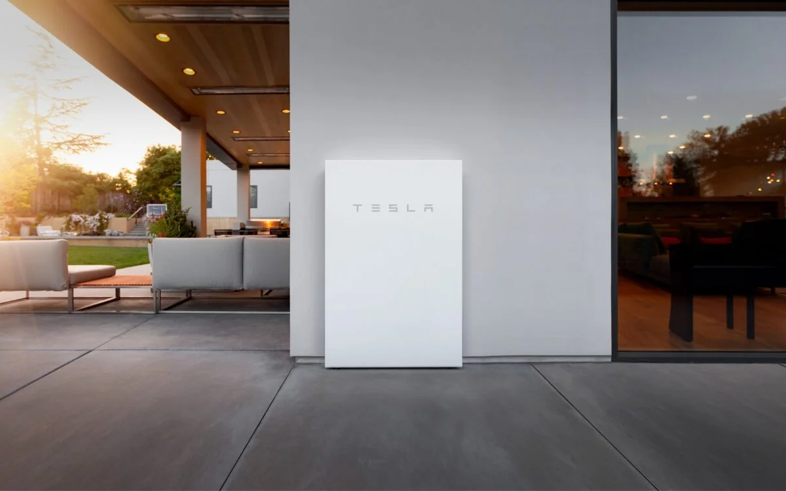

Powerwall le ofrece la posibilidad de almacenar energía para su uso posterior y funciona con o sin energía solar.
Cada sistema Powerwall incluye al menos un Powerwall y un Backup Gateway, que proporcionan supervisión, medición y
gestión de la energía para el sistema. Backup Gateway aprende y se adapta a su consumo de energía con el paso del tiempo,
recibe actualizaciones inalámbricas, al igual que el resto de productos Tesla, y es capaz de gestionar hasta diez Powerwalls.
Tesla Motors ha utilizado muy bien el IoT en sus coches. Sabemos que para el IoT necesitamos «una cosa» y aquí un coche es esa cosa. Con la ayuda
de la inteligencia artificial y el aprendizaje automático, Tesla ha logrado analizar y predecir el comportamiento de personas y coches en múltiples escenarios.

Aplicacion de Tesla para la gestión
La aplicación de Tesla ofrece una experiencia integral para que gestione sus productos Tesla Energy desde cualquier lugar y en cualquier momento.
Para empezar, descargue la aplicación de Tesla en la App Store o
Google Play e
inicie sesión con su Cuenta Tesla.
La aplicación de Tesla le permite gestionar su sistema de energía desde cualquier lugar con una vista completa de su hogar.
Supervise las operaciones diarias y comprenda el flujo de energía en su hogar.
Con la aplicación de Tesla, puede encontrar información sobre el consumo de energía de su hogar:
Datos de energía:
Manténgase al día del consumo de energía de su hogar, la producción de energía solar y
el comportamiento de carga de Powerwall. Consulte cómo utilizar sus gráficos de energía en la aplicación de Tesla.
Tarjetas de impacto
Descubra cómo su sistema solar y Powerwall generan valor a través del uso de energía de su hogar accediendo a las tarjetas de impacto.
Estadísticas de carga
Consulte sus gastos y ahorro totales al cargar su vehículo Tesla mediante la función de estadísticas de carga de la aplicación de Tesla.
Tarifas de electricidad
Las tarifas de electricidad miden con precisión el coste de importar o
exportar energía. La configuración y gestión de la tarifa de electricidad se realiza a través de la aplicación de Tesla.